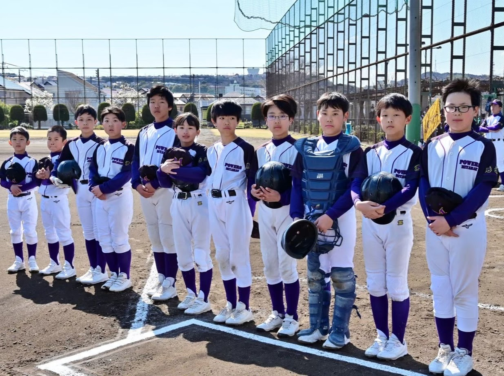
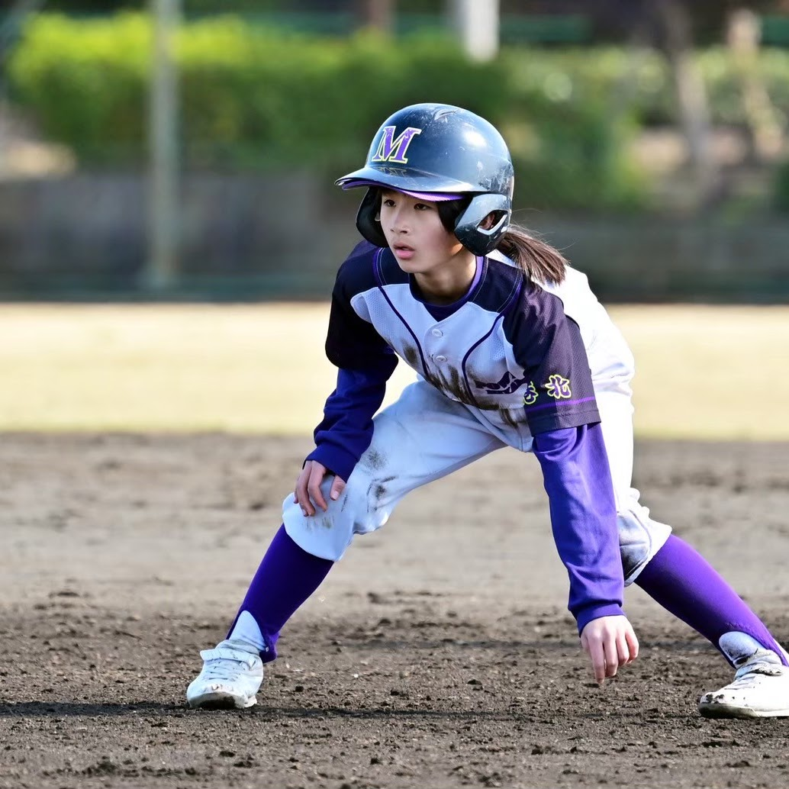
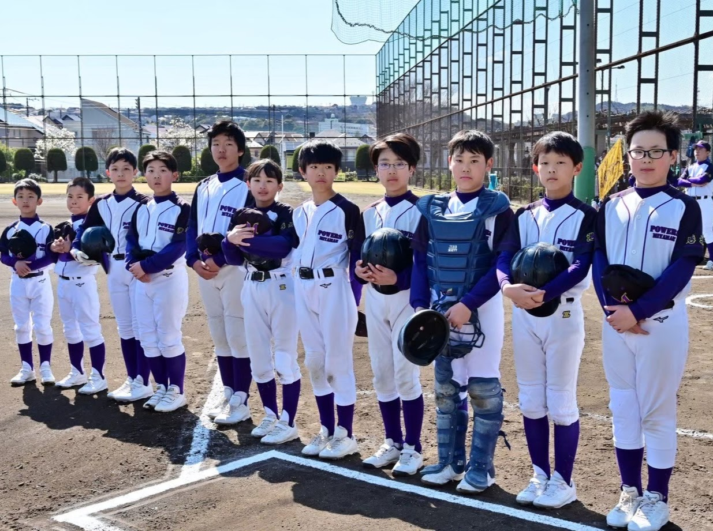
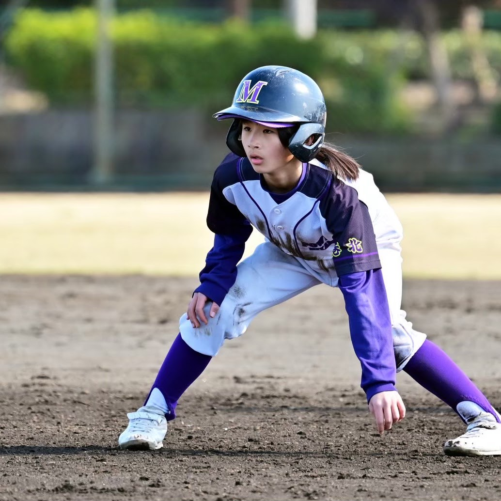

・１９８４年（昭和５９年）に設立した、横浜市港北区少年野球連盟に所属する軟式少年野球チームです。
・野球を楽しむ！いつも全力で！しっかりと挨拶！をモットーに活動してます。
・野球の基礎に加え、礼儀とマナーを大切にできる選手になるよう指導しております。それぞれの技能に応じた練習を行いますので、初心者でもご安心です。
・箕輪小・矢上小・日吉台小・日吉南小・綱島東小・日吉小（川崎市幸区北加瀬）に通う児童で構成されています。（選手人数：６年 １１名、４年１人、３年 ６人、２年 ３人の計２１名 ※２０２５年１１月現在）
【練習日時】 土曜・日曜・祝日 １３：００～１７：００（時期により変動）
【練習場所】 矢上小学校、箕輪小学校、樽町公園グラウンド
 



横浜市港北区日吉3‑23‑1
日吉駅から自転車で約6分
土日祝の13:00から宮前パワーズが練習するホームグラウンドです！
横浜市港北区箕輪町2‑7‑1
日吉駅・綱島駅からそれぞれ自転車で約5分
毎月練習で使用し、宮前パワーズの選手の多くが通っている小学校です！
横浜市港北区樽町2‑753
綱島駅から自転車で約5分
毎月練習を行い、試合でもよく使用する河川敷のグラウンドです！